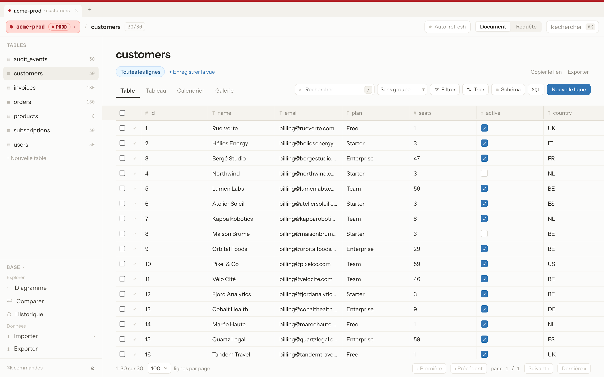
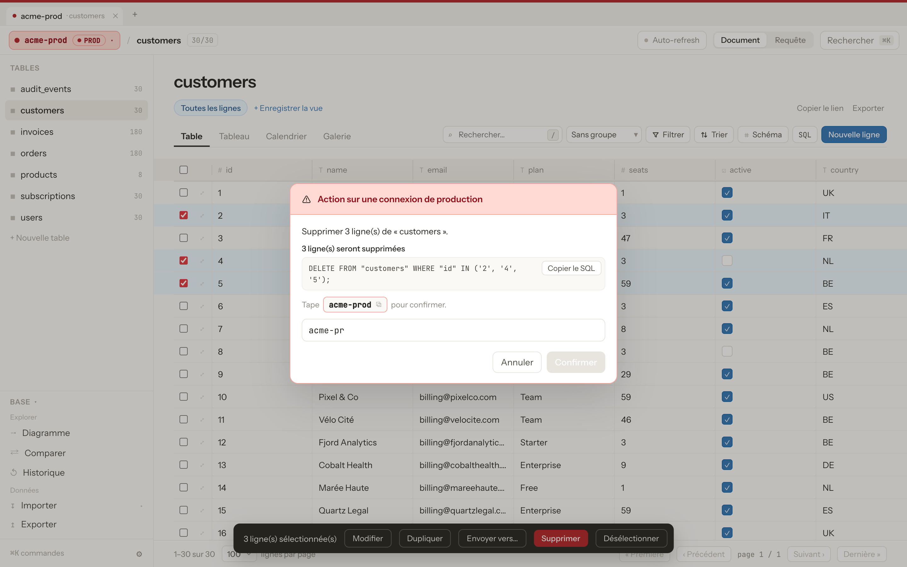
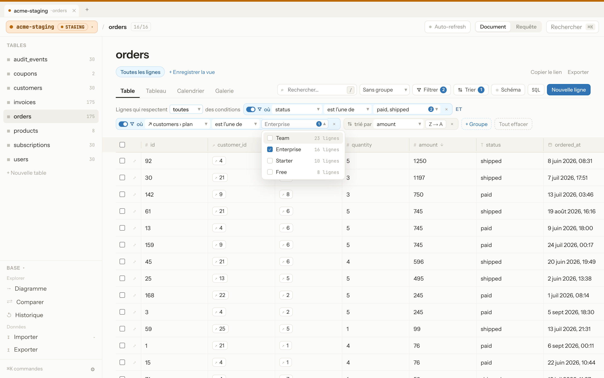
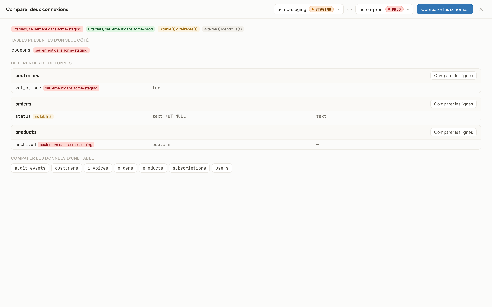
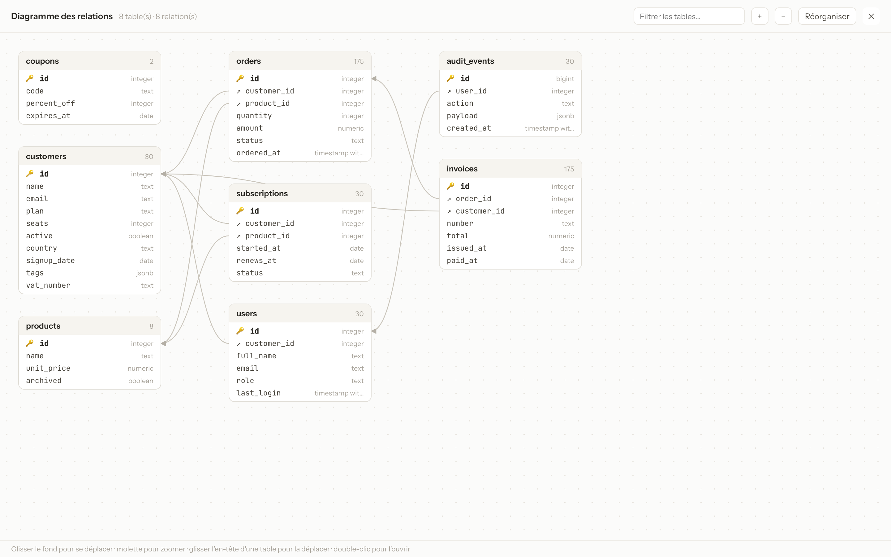
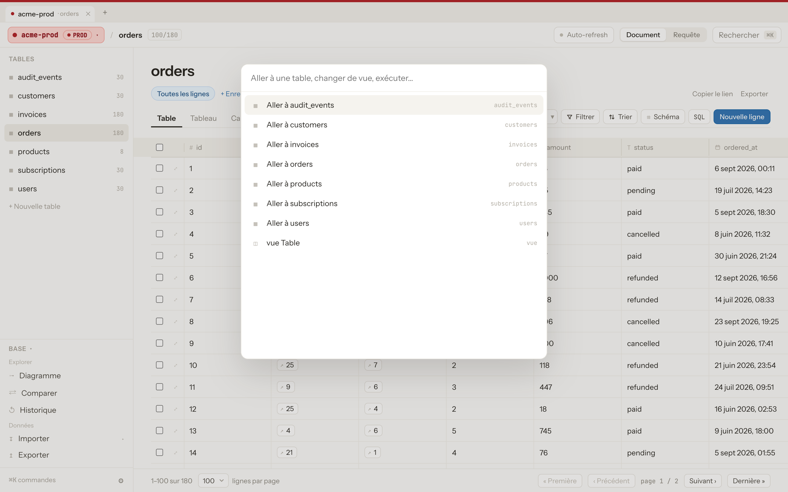

Overlook est un éditeur de base de données gratuit, open-source, 100% web, avec l'UI/UX d'un outil façon Notion — construit autour d'une seule règle : vous ne devriez jamais pouvoir confondre une base locale avec une base de production.

Un simple clic sur la mauvaise connexion ne devrait jamais pouvoir faire tomber la production. L'app rend donc cette connexion impossible à manquer — et impossible à toucher par accident.
PostgreSQL, MySQL et SQLite côte à côte, chacune taguée Local, Dev, Staging, Prod ou Custom et rangée dans des dossiers. Connexion via tunnel SSH, avec vérification des certificats TLS.
En prod, supprimer des lignes, modifier le schéma ou lancer une requête d'écriture exige de taper le nom de la connexion. Les modifications en masse et de schéma montrent d'abord le SQL exact et les lignes touchées.
Filtrez sur plusieurs valeurs, toutes ou au moins une condition, par groupes, et sur les colonnes des tables liées. Les valeurs suggérées indiquent combien de lignes chacune garde.
Comparez le schéma et les lignes de deux connexions, par exemple staging et prod, et affichez le diagramme des relations entre toutes les tables.
Copiez des lignes sélectionnées ou des tables entières vers une autre connexion, par exemple un extrait de la prod vers votre base locale.
Chaque écriture est consignée dans un journal persistant, consultable et filtrable. Une erreur sur une table hors prod ? Annulez-la en un clic.
Requêtes enregistrées et historique. Le mode lecture seule est imposé par la base elle-même, pas seulement par l'interface.
Import CSV, et gros scripts SQL exécutés par lots dans des transactions, avec la progression en direct. Export en SQL, CSV ou NDJSON.
Vues Table, Board, Calendrier et Galerie, vues enregistrées et liens partageables, ⌘K et raccourcis, copier-coller de plages de cellules.
Sur une connexion taguée « prod », supprimer des lignes, modifier le schéma ou lancer une requête d'écriture brute reste bloqué tant que vous n'avez pas tapé le nom de la connexion, avec le SQL exact sous les yeux.

Gardez les commandes dont le client est sur l'offre Enterprise, sans écrire de jointure. Chaque valeur suggérée indique combien de lignes elle garderait, et la vue entière se partage par lien.

Choisissez deux connexions pour lister les tables et colonnes présentes d'un seul côté ou définies différemment, puis comparez les lignes d'une table.

Toutes les tables avec leurs colonnes et leurs clés étrangères, disposées automatiquement. Déplacez, zoomez, double-cliquez sur une table pour l'ouvrir.

Ouvrez une table, changez de vue ou lancez une commande sans toucher la souris. Pensé pour ceux qui vivent dans leur éditeur.

Lancez-le sur votre machine, connectez-le à vos bases, et ne confondez plus jamais d'environnement. Il n'écoute qu'en local par défaut et se protège contre le DNS rebinding et le CSRF.